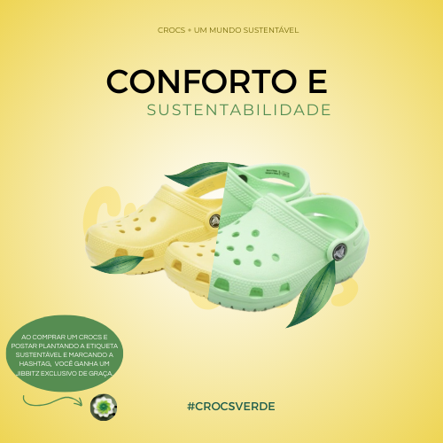

Conforto e Sustentabilidade
Um passo de cada vez, para um mundo mais verde e confortável.
Saiba Como ParticiparComo Funciona
Nossa campanha: Conectando Conforto à Natureza. Veja a dinâmica da campanha.
1. Adquira Seu Crocs Verde
Escolha o seu Crocs favorito e adquira em uma de nossas lojas físicas.
2. Plante Sua Árvore
Plante a sua muda com a etiqueta plantável que vem na embalagem.
3. Compartilhe e Inspire
Marque-nos em sua publicação e inspire mais pessoas. @crocsbrasil
4. Ganhe um Jibbitz Exclusivo!
Ao compartilhar e inspirar, você garante um Jibbitz colecionável e exclusivo.
Compartilhe e Participe
Ao usar a etiqueta plantável, você se torna parte do nosso movimento. Cada etiqueta é uma vida nova para o nosso planeta!
Exemplo de Publicação no Instagram:
`D√™ um passo em dire√ß√£o ao futuro! üíöüå± Na campanha #CROCSVERDE, cada Crocs comprado se transforma em uma semente plantada. Mostre seu amor pelo planeta e ganhe um Jibbitz exclusivo! Participe: use a hashtag e marque @crocsbrasil. Juntos, somos mais verdes. #Sustentabilidade`
Estimativa de Árvores Plantadas
Até hoje, nossa comunidade já contribuiu para o plantio de **mais de 1.000 árvores** em parceria com projetos de reflorestamento. Sua etiqueta plantável é a prova do seu compromisso!

Seu Jibbitz Exclusivo
Um item exclusivo para quem apoia a sustentabilidade exclusiva da campanha.